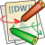
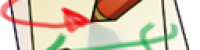

Table of Contents
Formatting Syntax
DokuWiki supports some simple markup language, which tries to make the datafiles to be as readable as possible. This page contains all possible syntax you may use when editing the pages. Simply have a look at the source of this page by pressing “Edit this page”. If you want to try something, just use the playground page. The simpler markup is easily accessible via quickbuttons, too.
Basic Text Formatting
DokuWiki supports bold, italic, underlined and monospaced texts. Of course you can combine all these.
DokuWiki supports **bold**, //italic//, __underlined__ and ''monospaced'' texts. Of course you can **__//''combine''//__** all these.
You can use subscript and superscript, too.
You can use <sub>subscript</sub> and <sup>superscript</sup>, too.
You can mark something as deleted as well.
You can mark something as <del>deleted</del> as well.
Paragraphs are created from blank lines. If you want to force a newline without a paragraph, you can use two backslashes followed by a whitespace or the end of line.
This is some text with some linebreaks
Note that the
two backslashes are only recognized at the end of a line
or followed by
a whitespace \\this happens without it.
This is some text with some linebreaks\\ Note that the two backslashes are only recognized at the end of a line\\ or followed by\\ a whitespace \\this happens without it.
You should use forced newlines only if really needed.
Links
DokuWiki supports multiple ways of creating links.
External
External links are recognized automagically: http://www.google.com or simply www.google.com - You can set the link text as well: This Link points to google. Email addresses like this one: andi@splitbrain.org are recognized, too.
DokuWiki supports multiple ways of creating links. External links are recognized automagically: http://www.google.com or simply www.google.com - You can set link text as well: [[http://www.google.com|This Link points to google]]. Email addresses like this one: <andi@splitbrain.org> are recognized, too.
Internal
Internal links are created by using square brackets. You can either just give a pagename or use an additional link text.
Internal links are created by using square brackets. You can either just give a [[pagename]] or use an additional [[pagename|link text]].
Wiki pagenames are converted to lowercase automatically, special characters are not allowed.
You can use namespaces by using a colon in the pagename.
You can use [[some:namespaces]] by using a colon in the pagename.
For details about namespaces see namespaces.
Linking to a specific section is possible, too. Just add the section name behind a hash character as known from HTML. This links to this Section.
This links to [[syntax#internal|this Section]].
Notes:
- Links to existing pages are shown in a different style from nonexisting ones.
- When a section's heading is changed, its bookmark changes, too. So don't rely on section linking too much.
Interwiki
DokuWiki supports Interwiki links. These are quick links to other Wikis. For example this is a link to Wikipedia's page about Wikis: Wiki.
DokuWiki supports [[doku>Interwiki]] links. These are quick links to other Wikis. For example this is a link to Wikipedia's page about Wikis: [[wp>Wiki]].
Windows Shares
Windows shares like this are recognized, too. Please note that these only make sense in a homogeneous user group like a corporate Intranet.
Windows Shares like [[\\server\share|this]] are recognized, too.
Notes:
- For security reasons direct browsing of windows shares only works in Microsoft Internet Explorer per default (and only in the “local zone”).
- For Mozilla and Firefox it can be enabled through different workaround mentioned in the Mozilla Knowledge Base. However, there will still be a JavaScript warning about trying to open a Windows Share. To remove this warning (for all users), put the following line in
conf/lang/en/lang.php(more details at localization): <code - conf/lang/en/lang.php> <?php / * Customization of the english language file * Copy only the strings that needs to be modified */ $lang['js']['nosmblinks'] =; </code> ==== Image Links ==== You can also use an image to link to another internal or external page by combining the syntax for links and images (see below) like this:~~NOTOC~~ Please note: The image formatting is the only formatting syntax accepted in link names.
The whole image and link syntax is supported (including image resizing, internal and external images and URLs and interwiki links).
===== Footnotes =====
You can add footnotes 1) by using double parentheses.
You can add footnotes 2) by using double parentheses.
===== Sectioning =====
You can use up to five different levels of headlines to structure your content. If you have more than three headlines, a table of contents is generated automatically – this can be disabled by including the string
Please note: The image formatting is the only formatting syntax accepted in link names.
The whole image and link syntax is supported (including image resizing, internal and external images and URLs and interwiki links).
===== Footnotes =====
You can add footnotes 1) by using double parentheses.
You can add footnotes 2) by using double parentheses.
===== Sectioning =====
You can use up to five different levels of headlines to structure your content. If you have more than three headlines, a table of contents is generated automatically – this can be disabled by including the string in the document. ==== Headline Level 3 ==== === Headline Level 4 === == Headline Level 5 == ==== Headline Level 3 ==== === Headline Level 4 === == Headline Level 5 == By using four or more dashes, you can make a horizontal line: —- ===== Media Files ===== You can include external and internal images, videos and audio files with curly brackets. Optionally you can specify the size of them. Real size:gif
Resize to given width: 
Resize to given width and height3): 
Resized external image:  Real size:
Resize to given width:
Resize to given width and height:
Resized external image:
By using left or right whitespaces you can choose the alignment.
Of course, you can add a title (displayed as a tooltip by most browsers), too.
For linking an image to another page see Image Links above.
==== Supported Media Formats ====
DokuWiki can embed the following media formats directly.
| Image |
Real size:
Resize to given width:
Resize to given width and height:
Resized external image:
By using left or right whitespaces you can choose the alignment.
Of course, you can add a title (displayed as a tooltip by most browsers), too.
For linking an image to another page see Image Links above.
==== Supported Media Formats ====
DokuWiki can embed the following media formats directly.
| Image | ,jpg,png| | Video |webm,ogv,mp4| | Audio |ogg,mp3,wav| | Flash |swf| If you specify a filename that is not a supported media format, then it will be displayed as a link instead. By adding?linkonlyyou provide a link to the media without displaying it inline dokuwiki-128.png dokuwiki-128.png This is just a link to the image. ==== Fallback Formats ==== Unfortunately not all browsers understand all video and audio formats. To mitigate the problem, you can upload your file in different formats for maximum browser compatibility. For example consider this embedded mp4 video: When you upload avideo.webmandvideo.ogvnext to the referencedvideo.mp4, DokuWiki will automatically add them as alternatives so that one of the three files is understood by your browser. Additionally DokuWiki supports a “poster” image which will be shown before the video has started. That image needs to have the same filename as the video and be either a jpg or png file. In the example above avideo.jpgfile would work. ===== Lists ===== Dokuwiki supports ordered and unordered lists. To create a list item, indent your text by two spaces and use a*for unordered lists or a-for ordered ones. * This is a list * The second item * You may have different levels * Another item - The same list but ordered - Another item - Just use indention for deeper levels - That's it <code> * This is a list * The second item * You may have different levels * Another item - The same list but ordered - Another item - Just use indention for deeper levels - That's it </code> Also take a look at the FAQ on list items. ===== Text Conversions ===== DokuWiki can convert certain pre-defined characters or strings into images or other text or HTML. The text to image conversion is mainly done for smileys. And the text to HTML conversion is used for typography replacements, but can be configured to use other HTML as well. ==== Text to Image Conversions ==== DokuWiki converts commonly used emoticons to their graphical equivalents. Those Smileys and other images can be configured and extended. Here is an overview of Smileys included in DokuWiki: *| 8-)
*
8-)
*  8-O
*
8-O
*  :-(
*
:-(
*  :-)
*
:-)
*  =)
*
=)
*  :-/
*
:-/
*  :-\
*
:-\
*  :-?
*
:-?
*  :-D
*
:-D
*  :-P
*
:-P
*  :-O
* :-X
*
:-O
* :-X
*  :-|
*
:-|
*  ;-)
*
;-)
*  ^_^
*
^_^
*  m(
* :?:
* :!:
*
m(
* :?:
* :!:
*  LOL
* FIXME
* DELETEME
==== Text to HTML Conversions ====
Typography: DokuWiki can convert simple text characters to their typographically correct entities. Here is an example of recognized characters.
→ ← ↔ ⇒ ⇐ ⇔ » « – — 640×480 © ™ ®
“He thought 'It's a man's world'…”
<code>
→ ← ↔ ⇒ ⇐ ⇔ » « – — 640×480 © ™ ®
“He thought 'It's a man's world'…”
</code>
The same can be done to produce any kind of HTML, it just needs to be added to the pattern file.
There are three exceptions which do not come from that pattern file: multiplication entity (640×480), 'single' and “double quotes”. They can be turned off through a config option.
===== Quoting =====
Some times you want to mark some text to show it's a reply or comment. You can use the following syntax:
<code>
I think we should do it
> No we shouldn't
» Well, I say we should
> Really?
» Yes!
»> Then lets do it!
</code>
I think we should do it
> No we shouldn't
» Well, I say we should
> Really?
» Yes!
»> Then lets do it!
===== Tables =====
DokuWiki supports a simple syntax to create tables.
^ Heading 1 ^ Heading 2 ^ Heading 3 ^
| Row 1 Col 1 | Row 1 Col 2 | Row 1 Col 3 |
| Row 2 Col 1 | some colspan (note the double pipe) ||
| Row 3 Col 1 | Row 3 Col 2 | Row 3 Col 3 |
Table rows have to start and end with a
LOL
* FIXME
* DELETEME
==== Text to HTML Conversions ====
Typography: DokuWiki can convert simple text characters to their typographically correct entities. Here is an example of recognized characters.
→ ← ↔ ⇒ ⇐ ⇔ » « – — 640×480 © ™ ®
“He thought 'It's a man's world'…”
<code>
→ ← ↔ ⇒ ⇐ ⇔ » « – — 640×480 © ™ ®
“He thought 'It's a man's world'…”
</code>
The same can be done to produce any kind of HTML, it just needs to be added to the pattern file.
There are three exceptions which do not come from that pattern file: multiplication entity (640×480), 'single' and “double quotes”. They can be turned off through a config option.
===== Quoting =====
Some times you want to mark some text to show it's a reply or comment. You can use the following syntax:
<code>
I think we should do it
> No we shouldn't
» Well, I say we should
> Really?
» Yes!
»> Then lets do it!
</code>
I think we should do it
> No we shouldn't
» Well, I say we should
> Really?
» Yes!
»> Then lets do it!
===== Tables =====
DokuWiki supports a simple syntax to create tables.
^ Heading 1 ^ Heading 2 ^ Heading 3 ^
| Row 1 Col 1 | Row 1 Col 2 | Row 1 Col 3 |
| Row 2 Col 1 | some colspan (note the double pipe) ||
| Row 3 Col 1 | Row 3 Col 2 | Row 3 Col 3 |
Table rows have to start and end with a for normal rows or a^for headers. ^ Heading 1 ^ Heading 2 ^ Heading 3 ^ | Row 1 Col 1 | Row 1 Col 2 | Row 1 Col 3 | | Row 2 Col 1 | some colspan (note the double pipe) || | Row 3 Col 1 | Row 3 Col 2 | Row 3 Col 3 | To connect cells horizontally, just make the next cell completely empty as shown above. Be sure to have always the same amount of cell separators! Vertical tableheaders are possible, too. | ^ Heading 1 ^ Heading 2 ^ ^ Heading 3 | Row 1 Col 2 | Row 1 Col 3 | ^ Heading 4 | no colspan this time | | ^ Heading 5 | Row 2 Col 2 | Row 2 Col 3 | As you can see, it's the cell separator before a cell which decides about the formatting: | ^ Heading 1 ^ Heading 2 ^ ^ Heading 3 | Row 1 Col 2 | Row 1 Col 3 | ^ Heading 4 | no colspan this time | | ^ Heading 5 | Row 2 Col 2 | Row 2 Col 3 | You can have rowspans (vertically connected cells) by adding:::into the cells below the one to which they should connect. ^ Heading 1 ^ Heading 2 ^ Heading 3 ^ | Row 1 Col 1 | this cell spans vertically | Row 1 Col 3 | | Row 2 Col 1 | ::: | Row 2 Col 3 | | Row 3 Col 1 | ::: | Row 2 Col 3 | Apart from the rowspan syntax those cells should not contain anything else. ^ Heading 1 ^ Heading 2 ^ Heading 3 ^ | Row 1 Col 1 | this cell spans vertically | Row 1 Col 3 | | Row 2 Col 1 | ::: | Row 2 Col 3 | | Row 3 Col 1 | ::: | Row 2 Col 3 | You can align the table contents, too. Just add at least two whitespaces at the opposite end of your text: Add two spaces on the left to align right, two spaces on the right to align left and two spaces at least at both ends for centered text. ^ Table with alignment ^^^ | right| center |left | |left | right| center | | xxxxxxxxxxxx | xxxxxxxxxxxx | xxxxxxxxxxxx | This is how it looks in the source: ^ Table with alignment ^^^ | right| center |left | |left | right| center | | xxxxxxxxxxxx | xxxxxxxxxxxx | xxxxxxxxxxxx | Note: Vertical alignment is not supported. ===== No Formatting ===== If you need to display text exactly like it is typed (without any formatting), enclose the area either with<nowiki>tags or even simpler, with double percent signs%%. This is some text which contains addresses like this: http://www.splitbrain.org and **formatting**, but nothing is done with it. The same is true for //__this__ text// with a smiley ;-). This is some text which contains addresses like this: http://www.splitbrain.org and **formatting**, but nothing is done with it. The same is true for //__this__ text// with a smiley ;-). ===== Code Blocks ===== You can include code blocks into your documents by either indenting them by at least two spaces (like used for the previous examples) or by using the tags<code>or<file>. This is text is indented by two spaces. <code> This is preformatted code all spaces are preserved: like ←this </code> <file> This is pretty much the same, but you could use it to show that you quoted a file. </file> Those blocks were created by this source: This is text is indented by two spaces. <code> This is preformatted code all spaces are preserved: like ←this </code> <file> This is pretty much the same, but you could use it to show that you quoted a file. </file> ==== Syntax Highlighting ==== DokuWiki can highlight sourcecode, which makes it easier to read. It uses the GeSHi Generic Syntax Highlighter – so any language supported by GeSHi is supported. The syntax uses the same code and file blocks described in the previous section, but this time the name of the language syntax to be highlighted is included inside the tag, e.g.<code java>or<file java>. <code java> / * The HelloWorldApp class implements an application that * simply displays “Hello World!” to the standard output. */ class HelloWorldApp { public static void main(String[] args) { System.out.println(“Hello World!”); Display the string. } } </code> The following language strings are currently recognized: 4cs 6502acme 6502kickass 6502tasm 68000devpac abap actionscript3 actionscript ada aimms algol68 apache applescript aptsources arm asm asp asymptote autoconf autohotkey autoit avisynth awk bascomavr bash basic4gl batch bf biblatex bibtex blitzbasic bnf boo caddcl cadlisp ceylon cfdg cfm chaiscript chapel cil cloadrunner clojure cmac cmake cobol coffeescript c cpp cpp-qt cpp-winapi csharp css cuesheet cwinapi dart dcl dcpu16 dcs delphi diff div dos dot d ecmascript eiffel email epc e erlang euphoria ezt f1 falcon fo fortran freebasic freeswitch fsharp gambas gdb genero genie gettext glsl gml gnuplot go groovy gwbasic haskell haxe hicest hq9plus html html4strict html5 icon idl ini inno intercal io ispfpanel java5 java javascript jcl j jquery julia kixtart klonec klonecpp kotlin latex lb ldif lisp llvm locobasic logtalk lolcode lotusformulas lotusscript lscript lsl2 lua m68k magiksf make mapbasic mathematica matlab mercury metapost mirc mk-61 mmix modula2 modula3 mpasm mxml mysql nagios netrexx newlisp nginx nimrod nsis oberon2 objc objeck ocaml-brief ocaml octave oobas oorexx oracle11 oracle8 oxygene oz parasail parigp pascal pcre perl6 perl per pf phix php-brief php pic16 pike pixelbender pli plsql postgresql postscript povray powerbuilder powershell proftpd progress prolog properties providex purebasic pycon pys60 python qbasic qml q racket rails rbs rebol reg rexx robots roff rpmspec rsplus ruby rust sas sass scala scheme scilab scl sdlbasic smalltalk smarty spark sparql sql sshconfig standardml stonescript swift systemverilog tclegg tcl teraterm texgraph text thinbasic tsql twig typoscript unicon upc urbi uscript vala vbnet vb vbscript vedit verilog vhdl vim visualfoxpro visualprolog whitespace whois winbatch wolfram xbasic xml xojo xorg_conf xpp yaml z80 zxbasic There are additional advanced options available for syntax highlighting, such as highlighting lines or adding line numbers. ==== Downloadable Code Blocks ==== When you use the<code>or<file>syntax as above, you might want to make the shown code available for download as well. You can do this by specifying a file name after language code like this: <code> <file php myexample.php> <?php echo “hello world!”; ?> </file> </code> <file php myexample.php> <?php echo “hello world!”; ?> </file> If you don't want any highlighting but want a downloadable file, specify a dash (-) as the language code:<code - myfile.foo>. ===== RSS/ATOM Feed Aggregation ===== DokuWiki can integrate data from external XML feeds. For parsing the XML feeds, SimplePie is used. All formats understood by SimplePie can be used in DokuWiki as well. You can influence the rendering by multiple additional space separated parameters: ^ Parameter ^ Description ^ | any number | will be used as maximum number items to show, defaults to 8 | | reverse | display the last items in the feed first | | author | show item authors names | | date | show item dates | | description| show the item description. All HTML tags will be stripped | | nosort | do not sort the items in the feed | | n[dhm] | refresh period, where d=days, h=hours, m=minutes. (e.g. 12h = 12 hours). | The refresh period defaults to 4 hours. Any value below 10 minutes will be treated as 10 minutes. DokuWiki will generally try to supply a cached version of a page, obviously this is inappropriate when the page contains dynamic external content. The parameter tells DokuWiki to re-render the page if it is more than refresh period since the page was last rendered. By default the feed will be sorted by date, newest items first. You can sort it by oldest first using thereverseparameter, or display the feed as is withnosort. Example:- This Elephant Learned To Use a Hose As a Shower. Then Her Rival Sought Revenge by EditorDavid (2024/11/10 14:35)
- Salesforce to Hire 1,000 People for Big AI Product Sales Push by EditorDavid (2024/11/10 13:35)
- Free Software Foundation Plans Year of Celebrations For Its 40th Anniversary by EditorDavid (2024/11/10 12:34)
- NASA Investigates Laser-Beam Welding in a Vacuum for In-Space Manufacturing by EditorDavid (2024/11/10 11:34)
- The Team Behind GitHub's 'Atom' IDE Build a Cross-Platform, AI-Optional 'Zed Editor' by EditorDavid (2024/11/10 10:34)
- This Elephant Learned To Use a Hose As a Shower. Then Her Rival Sought Revenge by EditorDavid (2024/11/10 14:35)
- Salesforce to Hire 1,000 People for Big AI Product Sales Push by EditorDavid (2024/11/10 13:35)
- Free Software Foundation Plans Year of Celebrations For Its 40th Anniversary by EditorDavid (2024/11/10 12:34)
- NASA Investigates Laser-Beam Welding in a Vacuum for In-Space Manufacturing by EditorDavid (2024/11/10 11:34)
- The Team Behind GitHub's 'Atom' IDE Build a Cross-Platform, AI-Optional 'Zed Editor' by EditorDavid (2024/11/10 10:34)
===== Control Macros ===== Some syntax influences how DokuWiki renders a page without creating any output it self. The following control macros are availble: ^ Macro ^ Description | | ~~NOTOC~~ | If this macro is found on the page, no table of contents will be created | | ~~NOCACHE~~ | DokuWiki caches all output by default. Sometimes this might not be wanted (eg. when the <php> syntax above is used), adding this macro will force DokuWiki to rerender a page on every call | ===== Syntax Plugins ===== DokuWiki's syntax can be extended by Plugins. How the installed plugins are used is described on their appropriate description pages. The following syntax plugins are available in this particular DokuWiki installation:
- Markdowku 2021-12-04 by Julian Fagir, Raphael Wimmer (maintainer)
Integrates Markdown into Dokuwiki syntax